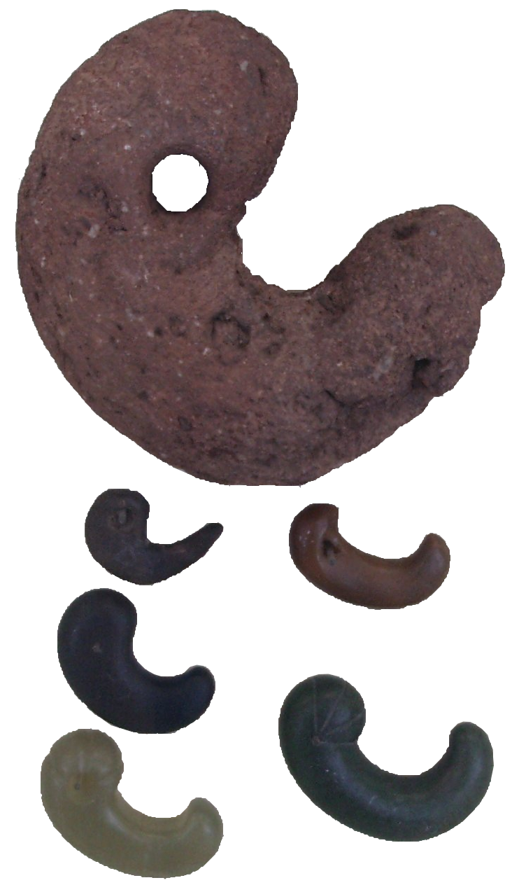
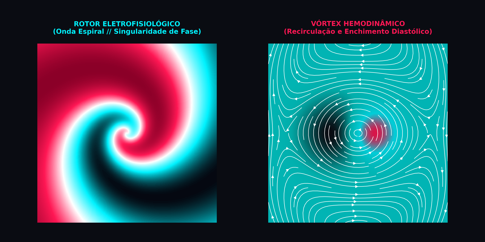

🎨 Identidade Visual e Conceito do Logotipo

kokor心sim
O Rotor / Magatama (勾玉): A Convergência entre a Onda Espiral e o Vórtex Fluido
🌪️ 1. O Conceito: O Rotor / Magatama (A Onda Espiral e o Vórtex)
O logotipo do KokoroSim rejeita os clichês gráficos habituais da cardiologia (como corações vetoriais simplórios ou linhas genéricas de ECG com traçado estilizado). Em seu lugar, a identidade visual constrói uma síntese geométrica direta entre a eletrofisiologia não-linear, a mecânica de fluidos intracardíaca e a iconografia clássica japonesa.

Magatama (勾玉)
Artefato arqueológico imperial clássico em pedra de jade: a silhueta da gota espiralada primordial.
Mitsudomoe (三つ巴)
Símbolo heráldico de vórtices em rotação perpétua: a dinâmica do fluxo contínuo de recirculação.
Figura 1: A convergência iconográfica — O relevo orgânico do Magatama e o dinamismo rotacional do Mitsudomoe unificados como alicerces da marca.
A Base Visual
A silhueta é inspirada no magatama (勾玉) e no elemento dinâmico unitário do mitsudomoe (a tradicional forma de gota ou vírgula espiralada presente há milênios na arte nipônica). Longe de ser um mero adorno esotérico, a geometria foi retraduzida sob parâmetros estritamente biofísicos.
A Convergência Multifísica
A forma espiralada resolve simultaneamente as duas físicas fundamentais simuladas pelo software:
- Na Eletrofisiologia Celular (O Choque): Rotores são ondas espirais auto-sustentadas que giram ao redor de uma singularidade de fase em meio excitável (reentrância funcional). São o substrato matemático primordial para a gênese e manutenção de arritmias letais, taquicardias ventriculares e fibrilação.
- Na Hemodinâmica e Dinâmica de Fluidos (O Fluxo): A mesma topologia espiralada descreve o núcleo de recirculação e os anéis de vórtice transmitrais (vortex rings) formados pelo sangue durante a fase de enchimento rápido ventricular diastólico, otimizando o direcionamento cinético da massa sanguínea em direção à via de saída aórtica.

Figura 2: A dualidade multifísica modelada no KokoroSim — À esquerda, o rotor elétrico de potencial de ação espiralado; à direita, o vórtice hidrodinâmico de recirculação ventricular.
🎯 2. Execução Gráfica e Eficiência de Silhueta
Um logotipo para ferramentas científicas e de computação precisa resolver um desafio de engenharia visual: manter impacto e legibilidade imediata tanto em 1-bit quanto em ícones de 24 pixels (como avatares de repositório no GitHub, favicons ou executáveis de desktop).
Traçado, Dinâmica Vetorial e o Raio/QRS
- Projeção à Direita (O Raio e a Onda QRS): A projeção afiada e agressiva voltada à direita evoca o formato angular de um relâmpago (raio) — simbolizando o estímulo bioelétrico — e reproduz com exatidão a morfologia rápida da Onda R / Complexo QRS do eletrocardiograma e a fase 0 da despolarização transmembrana (mediada pelos canais rápidos de sódio $I_{Na}$).
- Núcleo em Recirculação: O "corpo" arredondado fecha-se como uma espiral logarítmica de vórtice, traduzindo o turbilhonamento fluido e a dissipação de energia ventricular.
🈲 3. Tipografia Integrada e o Kanji 心 (Kokoro)
A tipografia do logotipo é geométrica, técnica e limpa, inspirada nas interfaces de controle de ficção científica e animes clássicos de mecha dos anos 90 (como Neon Genesis Evangelion e Ghost in the Shell):
$$\text{k} \cdot \text{o} \cdot \text{k} \cdot \text{o} \cdot \text{r} \cdot \mathbf{心} \cdot \text{s} \cdot \text{i} \cdot \text{m}$$
- Integração Sutil e Autêntica: O kanji 心 (kokoro — coração, mente, espírito) é fundido diretamente na estrutura tipográfica, substituindo o terceiro "o" da palavra (no término de kokoro e início de sim).
- Equilíbrio Semântico: Essa substituição preserva a legibilidade da pronúncia global (kokoro + sim), transformando o caractere no ponto focal de ligação entre a herança conceitual nipônica e a simulação de alta performance.
🔴🔵 4. Paleta de Cores: A Dualidade Eletromecânica
Em vez dos degradês assépticos e esbranquiçados de softwares médicos hospitalares, o KokoroSim adota blocos de cor sólidos de altíssimo contraste sobre uma base preta profunda (Dark Cyberpunk):
| Cor | Hex | Função Biofísica e Semiótica |
|---|---|---|
| Carmesim Neon | #ff1754 |
Representa o sangue arterial oxigenado, o calor metabólico, a Pressão Aórtica ($AoP$) e a força inotrópica de ejeção ventricular. |
| Ciano Elétrico | #00f2fe / #00cec9 |
Representa a bioeletricidade celular, a polaridade iônica de repouso, a Pressão Ventricular Esquerda ($LVP$) e o sangue venoso. |
| Amarelo Neon | #f1c40f |
Representa o retardo do Nó AV, a sincronia acústica e a telemetria do monitor de UTI. |
| Fundo Profundo | #0a0c12 |
O vazio eletrostático do chassi digital, destacando cada disparo iônico com brilho fosforescente. |
Essa combinação direta entre o calor mecânico do sangue arterial (carmesim) e a eletricidade fria do potencial de ação e do sangue venoso (ciano) sintetiza a própria essência do KokoroSim: um simulador onde o pulso elétrico e a hidrodinâmica ventricular coexistem em perfeita harmonia matemática.